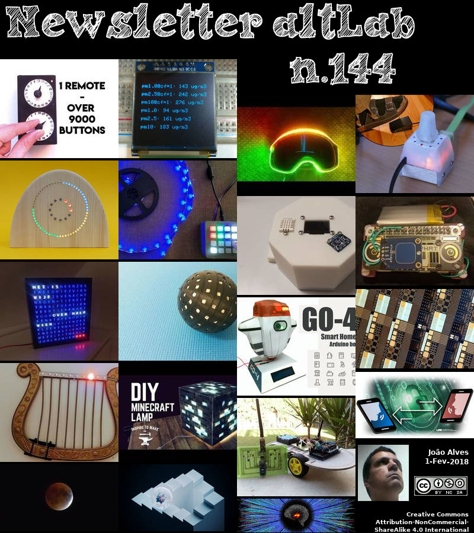

2018-02-01 - Nº 144


Editorial
Esta é a Newsletter Nº 144 que se apresenta com o mesmo formato que as anteriores. Se gostar da Newsletter partilhe-a!
Todas as Newsletters encontram-se indexadas no link.
Esta Newsletter tem os seguintes tópicos:
Faz anos hoje que nascia, em 1550, John Napier. Este escocês ficou conhecido por ser ao mesmo tempo matemático, físico e astrónomo. O feito mais conhecido dele foi ter descoberto os logaritmos. Ele também inventou os chamados "ossos de Napier" e tornou comum o uso do ponto decimal em aritmética e matemática.
Fazem também anos que nasciam, em 1905, Emilio Segrè e Lloyd Berkner. O primeiro era um físico italiano-americano que partilhou (com Owen Chamberlain) o Prêmio Nobel de Física de 1959 pela descoberta do antiprotão, uma anti-partícula com a mesma massa de um protão, mas com o oposto na carga eléctrica. Ele também criou átomos do novo elemento Tecnécio (1937) e Astatino (1940). O tecnécio ocupou um espaço até então vazio na Tabela Periódica, e foi o primeiro elemento artificial não encontrado na natureza. O astatino existe naturalmente apenas em quantidades extremamente pequenas porque é produto decadente de átomos maiores, e tendo uma meia-vida de apenas algumas horas, desaparece rapidamente por decomposição radioactiva para se tornarem átomos de outro elemento. Estima-se que exista actualmente cerca de 31 gramas de astatino na Terra, fazendo deste o elemento mais raro de que se tem conhecimento. O segundo, Lloyd, era um físico e engenheiro norte-americano, que foi o primeiro a medir a extensão, incluindo a altura e a densidade, da ionosfera (camadas ionizadas da atmosfera da Terra), levando a uma compreensão completa da propagação de ondas de rádio e ajudou a desenvolver sistemas de radar, especialmente o sistema de alerta precoce à distancia. Mais tarde, investigou a origem e o desenvolvimento da atmosfera terrestre. No início da sua carreira, ele trabalhou em faróis de radio-navegação para a divisão Airways do Bureau of Lighthouses (1927-28), como engenheiro de rádio na expedição Byrd Antarctic. Voltando ao Bureau of Standards dos EUA, ele estudou a ionosfera usando transmissões de rádio-pulso, e depois o magnetismo terrestre com a Instituição Carnegie.
Na semana que passou, Linus Torvalds anunciou o lançamento do Kernel Linux 4.15. Após um ciclo de desenvolvimento que era foram do comum em muitas maneiras esta semana foi possivel lançar a versão final. Esta foi uma versão que teve atrasos directamente atribuídos aos problemas relacionados com o meltdown e com o spectre - os bugs dos CPU.
Hoje a SpaceX lançou com sucesso o GovSat-1 a partir do Falcon 9. O foguetão Falcon 9 foi lançado carregando um satélite de geo-comunicações encomendado pelo governo do Luxemburgo. O satélite, criado pela Orbital STK e operado pela SES, apoiará operações humanitárias e militares para o Luxemburgo, entre outras funções de comunicação. O foguetão descolou da Cabo Canaveral na quarta-feira, um dia depois do lançamento inicial planeado. A janela original não foi viável devido ao clima, mas o foguetão foi lançado conforme previsto no inicio da sua data alternativa com as condições climáticas favoráveis do dia de hoje.
Na Newsletter desta semana apresentamos diversos projetos de maker. É apresentada a revista MagPI nº66.
Esta Newsletter encontra-se mais uma vez disponível no sistema documenta do altLab. Todas as Newsletters encontram-se indexadas no link.
 João Alves ([email protected])
João Alves ([email protected])
O conteúdo da Newsletter encontra-se sob a licença  Creative Commons Attribution-NonCommercial-ShareAlike 4.0 International License.
Creative Commons Attribution-NonCommercial-ShareAlike 4.0 International License.
Novidades da Semana
Linux 4.15
"After a release cycle that was unusual in so many (bad) ways, this last week was really pleasant. Quiet and small, and no last-minute panics, just small fixes for various issues. I never got a feeling that I'd need to extend things by yet another week, and 4.15 looks fine to me. Half the changes in the last week were misc driver stuff (gpu, input, networking) with the other half being a mix of networking, core kernel and arch updates (mainly x86). But all of it is tiny. So at least we had one good week." [...]
SpaceX successfully launches GovSat-1 on a flight proven Falcon 9
"SpaceX has launched a Falcon 9 rocket loaded with a geocommunications satellite commissioned by the Government of Luxembourg. The satellite, created by Orbital STK and to be operated by SES, will support humanitarian and military operations for Luxembourg, among other communications functions. The rocket took off from Cape Canaveral on Wednesday, a day after its initial planned launch. The original window wasn’t viable due to weather, but the rocket launched as planned at the opening of its backup date with favorable weather conditions today. SpaceX is also readying its Falcon Heavy for launch from Cape Canaveral, with a planned launch date of February 6. That’ll be a huge milestone for the company, regardless of whether the Heavy makes it all the way to orbit on its first try." [...]
Outras Notícias
How and where to see the super blue blood moon of 2018
"The cosmos offers an early morning trifecta for the world’s skygazers Wednesday: a super blue blood moon. That’s quite a mouthful, so let’s briefly break down what it all means: It is a supermoon because it will turn full at the closest point to Earth in its orbit, known as perigee, appearing slightly bigger and about 14 percent brighter than normal. Perigee will occur Tuesday, the day before full moon, when our planet and the moon will be 223,068 miles apart. Supermoons are fairly common, on average happening about every 14 months. This one to end January is actually the third in a row, following supermoons on Jan. 1 and Dec. 3, 2017. It is a blue moon because it is the second full moon occurring within the same month." [...]
Ciência e Tecnologia
In search of better Li-ion batteries and alternatives
"There is a lot of progress still to be made when it comes to batteries and energy storage. The problem of storing energy is often underestimated however. Gradual evolution in the world of batteries is more likely than a revolution. TU Delft's new batteries lab will focus primarily on research into potential alternatives for what is currently the standard technology: the lithium-ion battery. Confusing times "We are living in confusing times when it comes to batteries and energy storage", says TU Delft's Prof. Fokko Mulder. In his view, misconceptions have emerged about what is and is not possible in terms of energy storage, partly because of the rise of renewable sources such as wind and solar energy." [...]
Engineers create new architecture for vaporizable electronics
"Engineers from Cornell and Honeywell Aerospace have demonstrated a new method for remotely vaporizing electronics into thin air, giving devices the ability to vanish – along with their valuable data – if they were to get into the wrong hands. This unique ability to self-destruct is at the heart of an emerging technology known as transient electronics, in which key portions of a circuit, or the whole circuit itself, can discreetly disintegrate or dissolve. And because no harmful byproducts are released upon vaporization, engineers envision biomedical and environmental applications along with data protection. There are a number of existing techniques for triggering the vaporization, each with inherent drawbacks. Some transient electronics use soluble conductors that dissolve when contacted by water, requiring the presence of moisture. Others disintegrate when they reach a specific temperature, requiring a heating element and power source to be attached." [...]
People with tetraplegia gain rapid use of brain-computer interface
"A new approach to calibrating the pioneering BrainGate brain-computer interface allowed three clinical trial participants with tetraplegia to gain control of a computer cursor after just one simple calibration step. PROVIDENCE, R.I. [Brown University] — For a brain-computer interface (BCI) to be truly useful for a person with tetraplegia, it should be ready whenever it’s needed, with minimal expert intervention, including the very first time it’s used. In a new study in the Journal of Neural Engineering, researchers in the BrainGate* collaboration demonstrate new techniques that allowed three participants to achieve peak BCI performance within three minutes of engaging in an easy, one-step process. One participant, “T5,” a 63-year-old man who had never used a BCI before, needed only 37 seconds of calibration time before he could control a computer cursor to reach targets on a screen, just by imagining using his hand to move a joystick. Dr. David Brandman, lead author of the study and an engineering postdoctoral researcher at Brown University, said that while additional innovations will help to move implantable BCIs like BrainGate toward clinical availability for patients, this advance of rapid, intuitive calibration is a key one. It could allow future users and their caregivers to use the system much more quickly and to keep it calibrated over the long term." [...]
Scientists work to automate quick translation of obscure languages
"A team of researchers from the Information Sciences Institute at the USC Viterbi School of Engineering has received a $16.7 million grant from the Intelligence Advanced Research Projects Activity (IARPA) to develop an automated information translation and summarization tool to quickly translate obscure languages. Principal investigator and ISI research team leader Scott Miller, ISI computer scientist Jonathan May and ISI research lead Elizabeth Boschee, with senior advisers Prem Natarajan and Kevin Knight, are leading a team of about 30 researchers, including academics from the University of Massachusetts, Northeastern University, the Massachusetts Institute of Technology and the University of Notre Dame. Natarajan is the Michael Keston executive director and research professor of computer science at ISI; Knight is ISI research director and Dean’s Professor of Computer Science. The ISI team’s project is called SARAL, for Summarization and domain-Adaptive Retrieval, and includes experts in machine translation, speech recognition, morphology, information retrieval, representation and summarization. Saral is a Hindi word whose translations include “simple” and “ingenious.” “The overall objective is to provide a Google-like capability, except the queries are in English, but the retrieved documents are in a low-resource foreign language,” said Miller, who is based at ISI’s new office in Boston. “The aim is to retrieve relevant foreign-language documents and to provide English summaries explaining how each document is relevant to the English query.” In this project, the team will initially test its systems using Tagalog and Swahili, two low-resource languages selected by IARPA for the task." [...]
Researchers from TU Delft combine spintronics and nanophotonics in 2D material
"Spintronics in materials of just a few atoms thick is an emerging field in which the ‘spin’ of electrons is used to process data, rather than the charge. Unfortunately, the spin only lasts for a very short time, making it (as yet) difficult to exploit in electronics. Researchers from the Kavli Institute of Nanoscience at TU Delft, working with the Netherlands Organisation for Scientific Research’s AMOLF institute, have now found a way to convert the spin information into a predictable light signal at room temperature. The discovery brings the worlds of spintronics and nanophotonics closer together and might lead to the development of an energy-efficient way of processing data, in data centres, for example. The researchers have given an account of their results in Science. The research revolved around a nano-construction consisting of two components: an extremely thin silver thread, and a 2D material called tungsten disulfide." [...]
New research yields super-strong aluminum alloy
"Researchers have demonstrated how to create a super-strong aluminum alloy that rivals the strength of stainless steel, an advance with potential industrial applications. “Most lightweight aluminum alloys are soft and have inherently low mechanical strength, which hinders more widespread industrial application,” said Xinghang Zhang, a professor in Purdue University’s School of Materials Engineering. “However, high-strength, lightweight aluminum alloys with strength comparable to stainless steels would revolutionize the automobile and aerospace industries.” New research shows how to alter the microstructure of aluminum to impart greater strength and ductility. Findings were detailed in two new research papers. The work was led by a team of researchers that included Purdue postdoctoral research associate Sichuang Xue and doctoral student Qiang Li. The most recent paper was published online Jan. 22 in the journal Advanced Materials." [...]
NTU scientists create customizable, fabric-like power source for wearable electronics
"Scientists at Nanyang Technological University, Singapore (NTU Singapore) have created a customizable, fabric-like power source that can be cut, folded or stretched without losing its function. Led by Professor Chen Xiaodong, Associate Chair (Faculty) at the School of Materials Science & Engineering, the team reported in the journal Advanced Materials (print edition 8 January) how they have created the wearable power source, a supercapacitor, which works like a fast-charging battery and can be recharged many times. Crucially, they have made their supercapacitor customizable or “editable”, meaning its structure and shape can be changed after it is manufactured, while retaining its function as a power source. Existing stretchable supercapacitors are made into predetermined designs and structures, but the new invention can be stretched multi-directionally, and is less likely to be mismatched when it is joined up to other electrical components. The new supercapacitor, when edited into a honeycomb-like structure, has the ability to store an electrical charge four times higher than most existing stretchable supercapacitors. In addition, when stretched to four times its original length, it maintains nearly 98 per cent of the initial ability to store electrical energy, even after 10,000 stretch-and-release cycles." [...]
Startup makes labs smarter
"Platform connects individual pieces of lab equipment, compiles data in the cloud for speedier, more accurate research. Although Internet-connected “smart” devices have in recent years penetrated numerous industries and private homes, the technological phenomenon has left the research lab largely untouched. Spreadsheets, individual software programs, and even pens and paper remain standard tools for recording and sharing data in academic and industry labs. TetraScience, co-founded by Spin Wang SM ’15, a graduate of electrical engineering and computer science, has developed a data-integration platform that connects disparate types of lab equipment and software systems, in-house and at outsourced drug developers and manufacturers. It then unites the data from all these sources in the cloud for speedier and more accurate research, cost savings, and other benefits. “Software and hardware systems [in labs] cannot communicate with each other in a consistent way,” says Wang, TetraScience’s chief technology officer, who co-founded the startup with former Harvard University postdocs Salvatore Savo and Alok Tayi." [...]
X-Ray Experiments Suggest High Tunability of 2-D Material
"To see what is driving the exotic behavior in some atomically thin – or 2-D – materials, and find out what happens when they are stacked like Lego bricks in different combinations with other ultrathin materials, scientists want to observe their properties at the smallest possible scales. Enter MAESTRO, a next-generation platform for X-ray experiments at the Advanced Light Source (ALS) at the Department of Energy’s Lawrence Berkeley National Laboratory (Berkeley Lab), that is providing new microscale views of this weird 2-D world. In a study published Jan. 22 in the journal Nature Physics, researchers zeroed in on signatures of exotic behavior of electrons in a 2-D material with microscale resolution. The new insights gleaned from these experiments show that the properties of the 2-D semiconductor material they studied, called tungsten disulfide (WS2), may be highly tunable, with possible applications for electronics and other forms of information storage, processing, and transfer. Those applications could include next-gen devices spawned from emerging fields of research like spintronics, excitonics and valleytronics. In these fields, researchers seek to manipulate properties like momentum and energy levels in a material’s electrons and counterpart particles to more efficiently carry and store information – analogous to the flipping of ones and zeroes in conventional computer memory." [...]
Weak hydrogen bonds key to strong, tough infrastructure
"Rice lab simulates polymer-cement composites to find strongest, toughest materials The right mix of hydrogen bonds in polymer and cement composites is critical to making strong, tough and ductile infrastructure material, according to Rice University scientists who want to mimic the mechanics of mother-of-pearl and similar natural composites with synthetic materials. Seashells made of mother-of-pearl, aka nacre, get their remarkable properties from overlapping micron-sized, mineralized plates held together by a soft matrix. This structure can be approached by cement and polymer composites that may, for instance, make better earthquake-resistant concrete, according to Rouzbeh Shahsavari, an assistant professor of civil and environmental engineering. The Rice lab ran more than 20 computer simulations of how polymers and cement molecules come together at the nanoscale and what drives their adhesion. The researchers showed that the proximity of oxygen and hydrogen atoms is the critical factor in forming a network of weak hydrogen bonds that connects soft and hard layers. Common polyacrylic acid (PAA) proved best at binding the overlapping layers of cement crystals with an optimal overlap of about 15 nanometers." [...]
Advances in Lasers Get to the Long and Short of it
"A new way of modifying the dipole moment of cholesteric liquid crystals allows for researchers to select between the different band-edge modes experimentally for the first time. Since lasers were first developed, the demand for more adaptable lasers has only increased. Chiral nematic liquid crystals (CLCs) are an emerging class of lasing devices that are poised to shape how lasers are used in the future because of their low thresholds, ease of fabrication, and ability to be tuned across wider swaths of the electromagnetic spectrum. New work on how to select band-edge modes in these devices, which determine the lasing energy, may shine light on how lasers of the future will be tuned. The laser cavities are formed of a chiral nematic liquid crystal doped with a fluorescent dye. The liquid crystal creates a photonic bandgap in the laser cavity." [...]
Breakthrough leads to sequencing of a human genome using a pocket-sized device
"A new nanopore technology for direct sequencing of long strands of DNA has resulted in the most complete human genome ever assembled with a single technology, scientists have revealed. The research, published today in Nature Biotechnology, involved scientists from the University of Nottingham, University of Birmingham and the University of East Anglia in the UK in collaboration with scientists in the US and Canada. Using an emerging technology – a pocket sized, portable DNA sequencer - the scientists sequenced a complete human genome, in fragments hundreds of times larger than usual, enabling new biological insights. The authors generated a new method for sequencing “ultra-long” sequences of DNA, more than a thousand times longer than the original reads used to generate the human genome reference sequence in 2001. Recently the authors have used this method to generate the longest ever read sequenced at 1,204,840 bases in length, 8,000 times longer than a typical sequencing read. Scaling the sequencing pore to the size of an adult fist, this is the equivalent to analysing a 3.85 km (2.4 mile) long rope." [...]
NIST's Superconducting Synapse May Be Missing Piece for 'Artificial Brains'
"Researchers at the National Institute of Standards and Technology (NIST) have built a superconducting switch that “learns” like a biological system and could connect processors and store memories in future computers operating like the human brain. The NIST switch, described in Science Advances (link is external), is called a synapse, like its biological counterpart, and it supplies a missing piece for so-called neuromorphic computers. Envisioned as a new type of artificial intelligence, such computers could boost perception and decision-making for applications such as self-driving cars and cancer diagnosis. A synapse is a connection or switch between two brain cells. NIST’s artificial synapse—a squat metallic cylinder 10 micrometers in diameter—is like the real thing because it can process incoming electrical spikes to customize spiking output signals. This processing is based on a flexible internal design that can be tuned by experience or its environment." [...]
Wearable robotics lab: towards light robotic suits safe testing facility
"Robots that assist people in regaining their mobility, will evolve from exoskeletons towards flexible suits, controlled in a smart way. That is what Prof Herman van der Kooij of the University of Twente foresees. He is leading the new ‘Wearable Robotics Lab’ of the UT and Roessingh Research and Development. This is a safe environment for testing new robots. A wearable robot helps people in regaining and strengthening their mobility. It replaces or improves a body function that is damaged, or acts as a training instrument that, in the end, enables patients to walk fully by themselves again." [...]
Scientists to showcase new technology standard that could shape the future of electronics design
"Researchers from Electronics and Computer Science at the University of Southampton have discovered a way of enhancing the capabilities of an emerging nanotechnology that could open the door to a new generation of electronics. This memristor technology will be showcased at ISCAS 2018, an international circuits and systems conference, in Florence, Italy, in May, where the team will also be presenting seven original research papers. In a study published in the journal Scientific Reports, researchers show how they have pushed the memristor – a simpler and smaller alternative to the transistor, with the capability of altering its resistance and storing multiple memory states – to a new level of performance after experimenting with its component materials. Traditionally, the processing of data in electronics has relied on integrated circuits (chips) featuring vast numbers of transistors – microscopic switches that control the flow of electrical current by turning it on or off. Transistors have got smaller and smaller to meet the increasing demands of technology, but are now reaching their physical limit, with – for example – the processing chips that power smartphones containing an average of five billion transistors. Memristors could hold the key to a new era in electronics, being both smaller and simpler in form than transistors, low-energy, and with the ability to retain data by ‘remembering’ the amount of charge that has passed through them – potentially resulting in computers that switch on and off instantly and never forget." [...]
Applying Machine Learning to the Universe's Mysteries
"Computers can beat chess champions, simulate star explosions, and forecast global climate. We are even teaching them to be infallible problem-solvers and fast learners. And now, physicists at the Department of Energy’s Lawrence Berkeley National Laboratory (Berkeley Lab) and their collaborators have demonstrated that computers are ready to tackle the universe’s greatest mysteries. The team fed thousands of images from simulated high-energy particle collisions to train computer networks to identify important features. The researchers programmed powerful arrays known as neural networks to serve as a sort of hivelike digital brain in analyzing and interpreting the images of the simulated particle debris left over from the collisions. During this test run the researchers found that the neural networks had up to a 95 percent success rate in recognizing important features in a sampling of about 18,000 images." [...]
New algorithm for simulating the structure of quantum systems on a quantum photonic chip
"An international collaboration of quantum physicists from the University of Bristol, Microsoft, Google, Imperial College, Max Planck Institute, and the Sun Yat-sen University have introduced a new algorithm to solve the energy structure of quantum systems on quantum computers. They have tested this algorithm on a silicon quantum photonic processor which performs the computation using photons, the elementary particles of light. The energy structure of a quantum system is made of quantised energy levels, the lowest energy level is called ground-state, while the higher energy levels are called excited states. In particular, this new algorithm is capable of finding the excited-states in a way that seems to have no direct analogue on a classical computer, providing a new way of studying physics and chemistry at the microscopic level. Fundamental chemical and physical properties of systems can be characterised by finding a particular set of quantized states called eigenstates which contains the ground state of the system (the state with minimal energy) and excited states (stationary states with higher energies). Author Jarrod McClean, from Google’s Quantum AI Lab, said: “Expanding the toolkit for excited states is crucial if we want quantum computers to make meaningful contributions to important areas such as solar cells and batteries.” It is expected that large quantum computers will be able to simulate complex chemical systems, a task impossible for classical computers, increasing our knowledge of physics and chemistry." [...]
Researchers propose novel solution to better secure voice over internet communication
"Researchers at the University of Alabama at Birmingham have developed a novel method to better protect Crypto Phones from eavesdropping and other forms of man-in-the-middle attacks. Crypto Phones consist of smartphone apps, mobile devices, personal computer or web-based Voice over Internet Protocol applications that use end-to-end encryption to ensure that only the user and the person they are communicating with can read what is sent. In order to secure what is being communicated, Crypto Phones require users to perform authentication tasks. “Research has shown that these tasks are prone to human errors, making these VoIP applications and devices highly vulnerable to man-in-the-middle and eavesdropping attacks, said Nitesh Saxena, Ph.D. associate professor in the UAB College of Arts and Sciences Department of Computer Science. In a paper published at the Association for Computing Machinery Conference on Computer and Communication Security in November, Saxena and Ph.D. student Maliheh Shirvanian introduce Closed Captioning Crypto Phones to address the issues in currently deployed Crypto Phones. To ensure that a man-in-the-middle attacker does not interfere with the transmission of the message, traditional Crypto Phones rely on the users to verbally communicate and match a key, called a checksum, that is displayed on each user’s device." [...]
The next big breakthrough in robotics
"While drones and driverless cars dominate the headlines, another breakthrough—robot dexterity—is likely to have an even greater impact in both business and everyday life. “Robot manipulation is the next shoe to drop,” says Robert Platt, computer science professor and head of the Helping Hands robotics lab at Northeastern. “Imagine a robot that can do things with it’s hands in the real world—anything from defusing a bomb to doing your laundry. This has been a dream in the research community for decades, but now we’re finally getting to the point where it could actually happen.” Recent advances in machine learning, Big Data, and robot perception have put us on the threshold of a quantum leap in the ability of robots to perform fine motor tasks and function in uncontrolled environments, says Platt. It’s the difference between robots that can do repetitive tasks in a highly-structured factory environment and a new era of humanoid robots that can do meaningful work in the real world. Why fine motor skills have lagged There’s an irony in the field of robots and artificial intelligence known as Moravek’s Paradox: What’s hard for humans is relatively easy for robots, and what’s easy for humans is nearly impossible for robots." [...]
Letting molecular robots swarm like birds
"A team of researchers from Hokkaido University and Kansai University has developed DNA-assisted molecular robots that autonomously swarm in response to chemical and physical signals, paving the way for developing future nano-machines. The world’s smallest “swarm robot” measures 25 nanometers in diameter and 5 micrometers in length, and exhibits swarming behavior resembling motile organisms such as fish, ants and birds. “Swarm robots are one of the most elusive subjects in robotics,” says Akira Kakugo of the research team at Hokkaido University. “Fish schools, ant colonies and bird flocks show fascinating features that cannot be achieved by individuals acting alone. These include the formation of complex structures, distinct divisions of labor, robustness and flexibility, all of which emerge through local interactions among the individuals without the presence of a leader.” Inspired by these characteristics, researchers have been working to develop micro-scale swarm robots. In the present study, Kakugo and his collaborators have built a molecular system that is composed of the three essential components of a robot: sensors, information processors and actuators." [...]
Columbia Engineers Develop Flexible Lithium Battery for Wearable Electronics
"Shaped like a spine, new design enables remarkable flexibility, high energy density, and stable voltage no matter how it is flexed or twisted The rapid development of flexible and wearable electronics is giving rise to an exciting range of applications, from smart watches and flexible displays—such as smart phones, tablets, and TV—to smart fabrics, smart glass, transdermal patches, sensors, and more. With this rise, demand has increased for high-performance flexible batteries. Up to now, however, researchers have had difficulty obtaining both good flexibility and high energy density concurrently in lithium-ion batteries. A team led by Yuan Yang, assistant professor of materials science and engineering in the department of applied physics and mathematics at Columbia Engineering, has developed a prototype that addresses this challenge: a Li-ion battery shaped like the human spine that allows remarkable flexibility, high energy density, and stable voltage no matter how it is flexed or twisted. The study is published today in Advanced Materials. “The energy density of our prototype is one of the highest reported so far,” says Yang." [...]
Materials Research Team Lights the Way for More Efficient LEDs
"Researchers at the U.S. Naval Research Laboratory (NRL) Center for Computational Materials Science, working with an international team of physicists, have revealed that nanocrystals made of cesium lead halide perovskites (CsPbX3), is the first discovered material which the ground exciton state is "bright,” making it an attractive candidate for more efficient solid-state lasers and light emitting diodes (LEDs). “The discovery of such material, and understanding of the nature of the existence of the ground bright exciton, open the way for the discovery of other semiconductor structures with bright ground excitons,” said Dr. Alexander Efros, research physicist, NRL. “An optically active bright exciton in this material emits light much faster than in conventional light emitting materials and enables larger power, lower energy use, and faster switching for communication and sensors.” The work, which was partially sponsored by the Office of Naval Research through a program managed by Dr. Chagaan Baatar, studied lead halide perovskites with three different compositions, including chlorine, bromine, and iodine. Nanocrystals made of these compounds and their alloys can be tuned to emit light at wavelengths that span the entire visible range, while retaining the fast light emission that gives them their superior performance. Semiconductors emit light when bound pairs of electrons and holes, known as excitons, recombine in a process called radiative decay." [...]
Quantum Algorithms Struggle Against Old Foe: Clever Computers
"For Cristian Calude, doubt began with a puzzle so simple, he said, that “even a child can understand it.” Here it is: Suppose you have a mysterious box that takes one of two possible inputs — you can press a red button or a blue button, say — and gives back one of two possible outputs — a red ball or a blue ball. If the box always returns the same color ball no matter what, it’s said to be constant; if the color of the ball changes with the color of the button, it’s balanced. Your assignment is to determine which type of box you’ve got by asking it to perform its secret act only once. At first glance, the task might seem hopeless. Indeed, when the physicist David Deutsch described this thought experiment in 1985, computer scientists believed that no machine operating by the rules of classical physics could learn the box’s identity with fewer than two queries: one for each input. Deutsch, however, found that by translating the problem into the strange language of quantum mechanics, he could in fact achieve a one-query solution." [...]
Modeling the universe
"MIT's Mark Vogelsberger and an international astrophysics team have created a new model pointing to black holes’ role in galaxy formation. A supercomputer simulation of the universe has produced new insights into how black holes influence the distribution of dark matter, how heavy elements are produced and distributed throughout the cosmos, and where magnetic fields originate. Astrophysicists from MIT, Harvard University, the Heidelberg Institute for Theoretical Studies, the Max-Planck Institutes for Astrophysics and for Astronomy, and the Center for Computational Astrophysics gained new insights into the formation and evolution of galaxies by developing and programming a new simulation model for the universe — “Illustris - The Next Generation” or IllustrisTNG. Mark Vogelsberger, an assistant professor of physics at MIT and the MIT Kavli Institute for Astrophysics and Space Research, has been working to develop, test, and analyze the new IllustrisTNG simulations. Along with postdocs Federico Marinacci and Paul Torrey, Vogelsberger has been using IllustrisTNG to study the observable signatures from large-scale magnetic fields that pervade the universe. Vogelsberger used the IllustrisTNG model to show that the turbulent motions of hot, dilute gases drive small-scale magnetic dynamos that can exponentially amplify the magnetic fields in the cores of galaxies — and that the model accurately predicts the observed strength of these magnetic fields." [...]
Modelos 3D
Com a disponibilidade de ferramentas que permitem dar azo a nossa imaginação na criação de peças 3D e espaços como o thingiverse para as publicar, esta rubrica apresenta alguns modelos selecionados que poderão ser úteis.
Pythagoras, Pythagorean Theorem, 3D Models
"Pythagoras, Pythagorean Theorem, 3D Models The Pythagorean Theorem can be illustrated (not proved) using 3D models. In fact, it is a direct implication of a^2 + b^2 = c^2 in a 3D space. Pick an h > 0. Then, ha^2 + hb^2 = hc^2. We could construct a square-end box of a constant height along each side of the right triangle. However, there is much more to it." [...]
Documentação
A documentação é parte essencial do processo de aprendizagem e a Internet além de artigos interessantes de explorar também tem alguma documentação em formato PDF interessante de ler. Todos os links aqui apresentados são para conteúdo disponibilizado livremente pelo editor do livro.
The MagPI 66
"Media Player Projects With its HDMI socket and small form factor, the Raspberry Pi can quickly become a much more versatile media player than the ones you’d buy in the shops. This month, we’ve got a range of sound and vision projects that can put your Raspberry Pi at the heart of your entertainment. With it you can stream movies, play television shows, and listen to music tracks and radio. It’s a great introduction to digital making with a Raspberry Pi. Build an OctaPi Turn eight Raspberry Pi computers into an OctaPi- the cluster computer designed by spymasters at GCHQ. Plus!" [...]
Projetos Maker
Diversos Projetos interessantes.
1Km Range Remote Controlled Car
"Since I was little kid I was amazed by the remote Controlled Cars but their range never exceeded 10 meters. After I learned some Arduino programming I finally decided to build my own Remote Controlled Car that can go up to 1KM range using the nRF24L01+ module. My main goal was to make a car that have a high range with a long play time. To achieve this goal I made the car as light as possible using lightweight chassis and using lightweight Lithium-ion batteries that have good capacity (3000mAh). I struggled a lot to get the 1KM range out of the nRF24L01+ because I faced many problems during the build. But after all, it was really fun to build and I am really happy with the result." [...]
How i transformed an IKEA table into an infinity mirror coffee table
"I recently made myself an Infinity Mirror Coffee Table using an IKEA LACK coffee table. It turned out pretty cool! I made a video tutorial of how I made it. Take a look. " [...]
C4Tb0T - Wireless Customisable Cat Toy
"This toy is not just a wireless laser toy that you can control with your smartphone, not its more! You can mount other toys on this robot, making it the ultimate, customization cat toy. If you follow the instructions, you too will be able to make this beauty. It shouldnt be too hard, this is my first Arduino project ever made, so if I can do it, you can do it too! Have fun making this, and make sure to give it your own twist. You will need:Arduino UNOBluetooth module HC05JumpwiresWoodPaper macheGessoPaint1 x 360 servo1 x 180 servoCat laser (make sure to buy it at a pet store because some are dangerous to your pet's eyes)Hot glue gunNails (optional)Tape (optional)" [...]
DIY Minecraft Lamp
"In this instructable, I'm gonna show you how to build your very own Real Life Diamond Ore lamp! A friend of mine is a professional Minecraft Player. So I've decided to make this one for his birthday. " [...]
Programmable Rgb Led Sequencer (Using Arduino And Adafruit Trellis)
"My sons wanted color LED strips to light up their desks, and I didn't want to use a canned RGB strip controller, because I knew they'd get bored with the fixed patterns these controllers have. I also thought it would be a great opportunity to create a teaching tool for them that they could use to sharpen the programming and electronics skills I've been teaching them. This is the result. I'm going to show you how to build this simple, programmable RGB LED strip controller using an Arduino Uno (or Nano), an Adafruit Trellis, and a handful of other parts. The Adafruit Trellis is one of my favorite new toys from Lady Ada and crew. First of all, it's a mere $9.95 for the board, and another $4.95 for the silicone elastomer button pad (prices as of this writing)." [...]
The PiBadge
"Device inspired by the Combadge from Star Trek that can turn on computers using speech commands. Key Goals: Make a wearable device that vaguely resembles a Combadge from Star Trek Make it be able to respond to voice commands and perform actions – such as turn on a PC Ensure that additional functionality can be added via drag and dropping in Python modules Set a course for the Devron system. Now I love Star Trek, if you hadn’t already guessed – I’ve always wanted to make something like one of the Combadges from the show, but as with many things you’ll see on my site; I’ve had many dreams I’ve not been able to bring to life until now. So I set forth with some searches online and found the parts and software I needed to try and make one: - Raspberry Pi Zero W - Speaker pHAT - Momentary Touch Sensor - Adafruit Powerboost 500c - Lipoly Battery - Pibow Zero W Case - USB Microphone - OTG Converter Shim - Sugru - Wire - SD Card - 40 pin male header - Switch - Nylon Screws + Spacers - Tie Wraps - Blu-Tak" [...]
Pedal Controller
"We are about to create a custom USB HID device with a Digispark board. An USB device can act as a keyboard to send key strokes, or act as a mouse, depending on your needs. The Digispark is like a small brother of the Arduino, but it is especially useful to build cheep USB devices. In this tutorial we are going to build a pedal device, that acts as a mouse, to send mouse clicks with your foot. " [...]
Distance Sensitive Alerting Machine / Price List
"This instructable will teach you how to create a distance sensing machine that alerts you at different stages in terms of your distance from the sensor. These alerting tools include an RGB LED that illuminates the three traffic light colors as you get closer and closer, a seven segment display that displays your distance from the sensor, and a motor that is always running to let you know that the machine is on. This build also includes a normal red LED that is always on above the seven segment display to let you know that the power is on. " [...]
3X3X3 Led Cube With Bluetooth (Android)
"This is a guide to make your own 3x3x3 Bluetooth controlled LED cube It all started about 2 years ago when I joined an electronics workshop where I was introduced to basic electronics like what is resistor, capacitor, diode, how to solder and other stuff and I started my first few electronics projects like a light sensitive switch, clap switch, etc. Then after some time I heard about Arduino. I was told that this is an amazing platform from which I could take my projects to a whole new level. I then started exploring about Arduino through internet I didnt join any class I learned about Arduino only through googling and when I was familiar with it I brought my first Arduino. This changed how I used to look at electronics and made my first few Arduino projects. I liked the concept of LED cubes and decided to make one to begin I made a 2x2x2 LED cube then I thought that it was boring that the cue isnt in your control." [...]
Fedora 1.0 , An Intelligent Flower Pot
" FEDORA or Flower Environment Decorating Organic Result Analyzer is an intelligent flower pot for indoor gardening. FEDORA is not just a flower pot, it can act as an alarm clock, wireless music player and a tiny robot friend. The main feature included in this device is the voice notification system embedded in it. (Dear designers and inventors , I apologize for not being word-perfect in English) Features Automatically watering the plant, when soil moisture become dry An inbuilt tank of 1L capacity and the micro submersible pump installed in the pot helps to watering the plant at right time Water level indicator is added with FEDORA for sense the tank level, If the tank level becomes empty, user can identify it by through the indicator LEDs Soil status LED is also added in the pot for sense the soil moisture (If there is any error in the pumping mechanism, the soil moisture level becomes dry) A Temperature & Humidity sensor is added with this pot to sense the current temperature and humidity of the surroundings A growth light is added with this pot to provide sufficient artificial lights for the plant A bluetooth audio receiver installed inside, will helps to stream music from smartphones via bluetooth RBG LEDs assembled at the top portion of the pot helps to express the feelings of our plant/pot An alarm clock is added with FEDORA, This alarm clock will not reset if the power supply is switched off (Alarm details will stores at EEPROM) 24 Hrs auto screen refreshing clock is added with the pot An over flow sensor is added with the pot to prevent over flowing of the tank, while we filling it A (pre-recorded/saved) voice notification or interaction facility is added with this pot to make it so attractive A photosensitive sensor is added with it to, avoid playing voice notification at sleeping time (Night after we turned off the lights) A stepper motor driving tray is added with the pot, for take out the Arduino and upload the codes(updates) , with out removing the plant we planted at the to it RBG LED backlighting for make the pot more attractive A program controlled exhaust/cooler fan is added for exhaust the heat generated in the circuit layer due to the 7805 regulator ICFeatures skipped due to my exams and assignments Automatic wishing system,which can wish the user (Good Morning,Good After Noon etc) when he come in front of the pot (A particular wishes (eg:good morning) will deliver only once in a day)Communication of FEDORAs about their current working status (Which can help the user to identify errors or empty tank conditions of another pot kept in his house ) , then they say it to their user, when he present at in front of the potTouch sensitive plant , If anyone touch the plant , the background LEDs become red and warn them through voice Shaking or sensing of inclination, which helps to prevent leakage of water to the circuit layer (By using gyro sensors)If anyone make this pot please try to implement these 4 features, it can make the pot more attractive. " [...]
Radio Frequency - Joystick Control Bot
"In this instructable I will be showing you how to build a radio frequency - joystick control robot. This bot movements are controlled with the help of a joystick and it is completely wireless as in this I have used a RF 433 MHz transmitter reciever module. What surprises me is that it really does not mess up. This was just a short introduction, everything else from theory, building, and programming will be explained in later steps. Parts List:- Arduino Nano - 2RF 433 Mhz Transmitter-reciever module - 1L293D - 1Joystick - 1Breadboard -1Cardboard - As per requiredCaster wheel - 1BO motors - 2BO motor wheels - 2LiPo Battery - 1Jumper Wires - As per required" [...]
Led Gyro Sphere - Arduino
"Build this cool an interactive LED Sphere with 130 WS2182 LEDs controlled with an Arduino Nano and 6-axis controller and Audio MIC sensor. There are two buttons for adding effects and menus for this unique gadget. The concept behind this was to build a free-standing sphere with sensors that can be used to interact with and provide a platform for further development - interaction, lighting or games" [...]
Youtube Subscriber Counter With Esp8266
"I was inspired by the Play Button awards YouTube sends out for subscriber milestones, and built this circuit to display my realtime subscriber count using an ESP8266 wifi board and seven segment display. I built this one to celebrate surpassing 10k subscribers, so this is an upgrade to my previous counter, which only supports counts up to 9999. Personalize the code to work with your channel! Before attempting this project, you should be generally familiar with uploading new programs to your Arduino board and installing code libraries, both of which you can learn for free in my Arduino Class, though you really don't have to understand any of the actual Arduino code to get this project running. For a more in-depth introduction to the ESP8266 board (and its installation and setup), check out my free Internet of Things Class. For this project, you will need the following materials: Medium shadow boxPrinter and paperScissorsCutting mat or scrap cardboardIllustration board or more scrap cardboardUtility/craft knifeMetal ruler (optional)TapeGlue stickNodeMCU ESP-12E board2x 4-digit 7-segment display with i2c backpackSolderless breadboard and breadboard wires (optional but recommended for prototyping)perma-proto board or other perfboardMicro USB cable (charge + sync, not charge-only)USB power adapter (optional)and the following tools: Soldering iron and solderFlush diagonal cuttersDesoldering braid or solder sucker (for mistakes) Required software libraries: Arduino YouTube APIArduino JsonAdafruit GFXAdafruit LED BackpackUnique data required: Google API key YouTube channel IDWifi network name/passwordAs an alternative to the NodeMCU board, you can also use your favorite ESP8266 microcontroller board, some of which require an FTDI cable to upload new programs." [...]
How To Control Wemos D1 Mini/ Nodemcu Using Blynk App (Iot) (Esp8266)
"Hello friends, In this instructable, i will show you How to control wemos D1 mini or (nodemcu) using the blynk app. it's an absolute beginners guide. for detail tutorial. " [...]
3.5A Unipolar Stepper Motor Driver
"Unipolar stepper motor driver can drive unipolar motor up to 3.5A and supply range 10 To 50V DC. The board has been designed using STK672-442AEN IC. The STK672-442AN is a hybrid IC for use as a unipolar, 2-phase stepper motor driver with PWM current control and Micro-stepping. Features Supply Up to 50V DC Input Logic Supply 5V DC Input Load Current 3.5Amps Stepper Motor: 5 Wires, 6 Wires, 8 Wires (Unipolar) Built-in over current detection function, over heat detection function (Output Off) Fault 1 signal ( Active Low) is output when overcurrent or over heat is detected Fault 2 signal is used to output the result of activation of protection circuit detection at 2 levels. Built-in power on reset function A Micro-step sin wave driven driver can be activated merely by inputting an external clock. The Switch timing of the 4-phase distributor can be switched by setting an external pin (Mode3) to detect either the rise or fall, or rise only, of clock input." [...]
Get Started Building A Pm Monitoring Station
"Im especially interested in air pollution levels, because I live in China and while my city, Shenzhen, is probably one of the cleanest cities in China, it still has its bad days. So, I wanted to build my own to compare to the half-a-dozen air quality monitor apps I have on my phone. Why do I have so many? Because the reported levels are sometimes incredibly different and unreliable (maybe due to their different monitoring locations)--the two screenshots above were taken at the same time. Additionally, I wanted to be able to measure PM 1.0 in my indoor environment. Particulate Matter (PM) are microscopic liquid or solid matter floating around in the air." [...]
Face Tracking Arduino Robot
"Today we will be making a Arduino powered face tracking robot. The idea came from over on the Arduino create website, but they aren't using a robot. So, we will improve a little. You can see the post here. Now lets get started. First you will need the following items." [...]
Go-4 Smart Home Arduino Bot
"In this project I will show you how to build a Smart Home Bot using the IOT technology to control your home appliances remotely through the Internet. But before we start lets talk about this technique as we used to do What is the IOT? The Internet of Things (IoT) is a system of interrelated computing devices, mechanical and digital machines, objects, people that are provided with unique identifiers and the ability to transfer data over a network without requiring human-to-human or human-to-computer interaction. A thing, in the Internet of Things, can be a person with a heart monitor implant, an Irrigation systems in a farm with a biochip transponder, a vehicle that has built-in sensors to alert the driver when tire pressure is low or any other natural or man-made object that can be assigned an IP address and provided with the ability to transfer data over a network. So lets say that the IOT is a huge system over the internet that embraces every single machine using a unique ID calls IP address. How can I become a part of this world using my Arduino board?" [...]
Countclock Hours And Minutes
"The CountClock is a special clock that simplifies telling the time. It was designed with a very young audience in mind (children aged 2 to 7 years old), but the resulting clock may be appreciated by people of all ages. The CountClock Hours & Minutes has two features that simplify reading off time: firstly, time can be told by counting the lights (thats why the clock is called CountClock) and secondly it has multiple learning levels that break down the confusing characteristics of a normal analog clock into separate learning steps of increasing difficulty. The CountClock has been presented in a Meta Instructable (first published on January 29th, 2018) and has various separate Instructables explaining a number of aspects in more detail. The Meta Instructable is the best starting point for quickly overviewing the full series of publications (editorial note: currently not all info is up to date, but the Instructables are being updated over the days to come. Some links may not work yet, and the webshop may still be empty)." [...]
Bio Monitoring
"Hello everyone, In the context of a student project, we were asked to publish an article describing all the process. We will then present you how our bio monitoring system works. It is meant to be a portable device that allows to monitor the humidity, temperature and luminosity inside a greenhouse, here at the Universit Pierre-et-Marie-Curie Campus, in Paris. " [...]
Electromechanical Decimal To Binary To Hexadecimal Converter
"It is using an ESP32 equipped with an OLED display, two mechanical 7 segment displays and 14 relays. I'm using two NXP MC33996's along with the DPDT relays in an h-bridge configuration. To set(display) each individual segment it needs at least a 1ms pulse and to reset the segment it needs to be pulsed with the opposite polarity. This was a proof of concept before I design a much larger clock with 6 digits and 46 relays with two sets of flip dots as colons. The sound is amazing and I could not be happier with how it turned out. " [...]
Upgradable Automated/Connected Indoor Garden
"Hello guys, I have been around for more than two years now, I learned a lot from you and this is my turn to give back to the community and to share my project. As this is my first instructables ever, I call on your mercy :). A little bit of presentation about myself, I am a 21 years old student in last year of electronical engineering in France. My whole life I have seen my family being passionated about the garden, taking care of plants and spending several hours a week cleaning, planting and doing some other stuffs inside of it. As a kid I did not really have any interests ofr the gardening at all, it felt so boring as if it was missing something. But nowadays with my experience of technologies, I found the missing part and I changed my mind." [...]
Home Security With Orange Pi
"Essentially it is about the same idea like in my previous instructable: https://www.instructables.com/id/Home-Security-With... The only change is use of Orange Pi board (my choice was PC2) and one 4050 level shifter to protect boards IOs. To sum up - a cheap home security system that sends you emails with pictures of your possessions when someone visits your appartment unexpectedly. A system which is easily armed and disarmed the more conservative way than you could expect - a switch and a RFID tag. Sorry, I like it a lot ;-) You can get an Orange Pi for 10$ , a USB camera maybe 2$ (actually I use two clumsy junk ones! ), the rest maybe 30$ all together." [...]
Diy Arduino Geiger Counter
"Hello everybody! How do you do? This is project How-ToDo my name is Konstantin, and today I want to show you how i made this Geiger counter. I started to build this device almost from the beginning of last year. Since then it has gone through 3 complete rework and my laziness. The idea to make a dosimeter appeared from the very beginning of my passion of electronics, the topic of radiation was always interesting to me." [...]
Interactive Neopixel Skigoogle, Rgb Is Life
"Hello Makers, Now that 2017 is over, some volks hope that the hype about RGB ends, but I think 2018 will need a lot more of those little pixiedust emitters. ;) And because of that and the fact that this year it's the last my friends and I can join our school ski camp in Austria. I thought why not build the sickest Skigoogle ever, of course with Bluetooth, everything is better with Bluetooth and a Smartphone App to control it. It is a simple but very tedious projekt, if you want to build your own you will need at least a day for building the mask, I will later explain why. Sadly when I build this, I forgot to take some photos of the building process. If you want to join the RGB ski club... please go on and follow my instruction, else{ please enjoy the videos, the are very satisfying, at least some of them ;) }" [...]
Cubic Art
"This project is for an Arduino powered 4x4x4 cube of RGB LEDs. I have seen other LED cube projects using mono-colored LEDs and Charlieplexed RGB LEDs. This one is different in that it uses APA106-F5 addressable LEDs. An APA106-5F LED is similar to the well known WS2812 LED in that it is an RGB LED that can be daisy changed and driven by a single pin on the Arduino. Where the APA106-F5 differs from the WS2812 is in the package style and the communications timing. The APA106-F5 used in this project is in a 5mm domed, frosted package." [...]
Iharp
"Learn how to turn a cheap plastic harp into a fancy iHarp! Simply add a led strip driven by a microcontroller to make the harp an eyecatcher. " [...]
DIY Laser Steering Module For Arduino
"In this Instructable, I will demonstrate the construction of a dual-axis, single-mirror laser beam steering module using 3D printed parts and inexpensive components from eBay. This project has similarities to Arduino Laser Show with Full XY Control and Arduino Laser Show With Real Galvos but I believe is the first to use a 3D printed design with inexpensive solenoids. I am putting all the design files under the GPLv3 so that the design can be enhanced and improved upon. Although at present I have only assembled the module and written some very basic test code, my hope is that one day I can take it to the next level by incorporating the vector graphics code from my earlier Instructable, Super Fast Analog Voltages from Arduino. " [...]
Universal Arduino Remote
"Okay, the image is a bit misleading, there are not "over 9000" buttons on this remote, but rather 400 buttons. And you can control up to 20 devices through infrared (IR), with 20 different actions. What is it? It is a universal remote based on an Arduino board. Why this project? First, to learn more about Arduino." [...]
DIY Moisture-Based Smart Irrigation
"We know that plants require water as it acts as a transportation medium for nutrients by carrying the dissolved sugar and other nutrients through the plant. Without water, plants will wither. However excessive watering will fill pores in the soil, disturbing the balance of water and air and preventing the plant from breathing. Proper balance of water is important. The soil moisture sensor measures the moisture content of the soil. By deciding on a particular percentage, we can be reminded to water our plants when the soil is too dry." [...]
Word Clock
"A few years ago, I started making my first Word Clock, inspired by the nice Instructables available.Now that I made eight Word Clocks, which I try to improve each time, I think it is time to share my experience! An advantage of my experience is that the latest version of my Word Clock is actually quite simple: if you have all the components, you should be able to build it in one day. First, the inside of the Word Clock. My current version uses a RGB led strip: this is a led strip in which each 'light bulb' consists of a Red, Green and Blue led. By combining the three colors, (almost) every color can be created. The RGB led strip is controlled by one input (still a bit of magic to me)." [...]
Build a binary clock
"Solve real-world electronic and engineering problems with your Raspberry Pi and the help of renowned technology hacker and author, Simon Monk This is a very simple project to make. In fact, all you really need to do is plug the Sense or Unicorn HAT onto the Raspberry Pi’s GPIO header and install the software. This project displays the current time in binary. The rows of the display are (from top to bottom) the last two digits of the year (e.g. 15), the month number, the day of the month, the hour (24-hour format), the minute, the second, and finally hundredths of a second. The full article can be found in The MagPi 42 and was written by Simon Monk You’ll Need Raspberry Pi with 40-pin GPIO header (A+, B+, 2 and 3) Sense HAT or Pimoroni Unicorn HAT USB WiFi adaptor or Ethernet connection Reading the binary clock To read a binary clock, you either need to be good at recognising binary numbers or use a bit of arithmetic to calculate the time, by adding up the binary digit values for the LEDs that are lit on a particular row." [...]
3 in 1 temperature sensor shield for Arduino Nano
"This 3 in 1 shield for Arduino Nano helps to develop various temperature measuring applications. Arduino Nano shield consists of 3 different types of temperature sensors. MLX90614 non-contact temperature sensor10K NTC Analogue Temperature SensorProgrammable Resolution 1-Wire Digital Thermometer With this board is easy to make a contactless temperature meter using the earlier published 4 Digit display Nano shield, Note : Only MLX90614 sensor can be used with display shield , DS18200 and NTC has to be removed as display uses those port pins. Features Supply 5V DC Temperature Range -20 to 120 Degrees Centigrade Output Resolution 0.14 Degrees Centigrade SPI Interface Connected to Arduino Nano A5-SCL and A4-SDA Pins MLX90614 The MLX90614 is an infrared thermometer for non-contact temperature measurements. Both the IR sensitive thermopile detector chip and the signal conditioning ASIC are integrated in the same TO-39 can. Integrated into the MLX90614 are a low noise amplifier, 17-bit ADC and powerful DSP unit thus achieving high accuracy and resolution of the thermometer." [...]
That's all Folks!